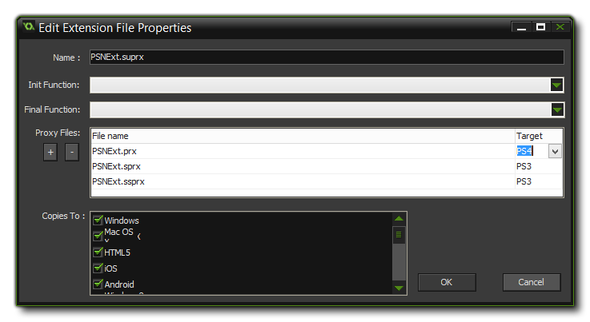

When working with multiple target platforms, it is worth noting
that you can create a single extension with only one set of
functions which will work on all platforms. This is achieved
by adding only one of the link libraries to your game as an
extension and placing the other in the to the list of Proxy
Files from the File Properties window.  For example, say you
have a Windows extension with the dll "Haggis.dll". You
would simply replicate this dll as a Mac DyLib, naming it
"libHaggis.dylib" and making sure that the internal
function names match those of the original Windows dll. This DyLib
would then be added into the Proxy Files and set to export
when the game is run on the Mac target, and GameMaker:
Studio will automatically use it when the extension functions
are called.
To add a proxy file, simply click the (+) button in the File
Properties window for the extension and browse to the file
location. Once it is added you may need to change the extension
target to the appropriate module, and when you next run your game
it will be included as proxy for that platform. You can remove
proxy files too by clicking the (-) button, which will remove the
last one in the list each press.
Once you have added your proxy files they will be stored in the GMX
of your game, in the Extensions folder (you can find them
easily by right-clicking on the extension and selecting "Open in
Explorer"), so if you need to edit them, you should edit the copied
files that are bundled with the game and not the originals, as
GameMaker: Studio will be using the ones in the GMX for
compiling your game.
It is very important that your proxy files follow the naming
conventions listed below, as GameMaker: Studio will parse
these names and assign the target module for the file according to
its extension and name and will automatically link the files for
you. If you do not follow these conventions your game may not work
at runtime, as GameMaker: Studio will not be able to work
out which file to use or it will not load the file properly.
The naming conventions for each target platform are given
below:
| Platform | Names |
|---|---|
| Windows | <Name>.dll |
| Linux | <Name>.so, lib<Name>.so, <Name>_linux.so, lib<Name>_linux.so |
| Mac | <Name>.dylib, lib<Name>.dylib |
| PS4 | <Name>.prx, lib<Name>.prx, <Name>_ps4.prx, lib<Name>_ps4.prx |
| PSVita | <Name>.suprx, lib<Name>.suprx, <Name>_vita.suprx, lib<Name>_vita.suprx, <Name>_psvita.suprx, lib<Name>_psvita.suprx |
| Xbox One | <Name>_xboxone.dll |
Using the conventions above, you would swap out the
<Name> part for the name of the base file that you are
adding the proxy files for.